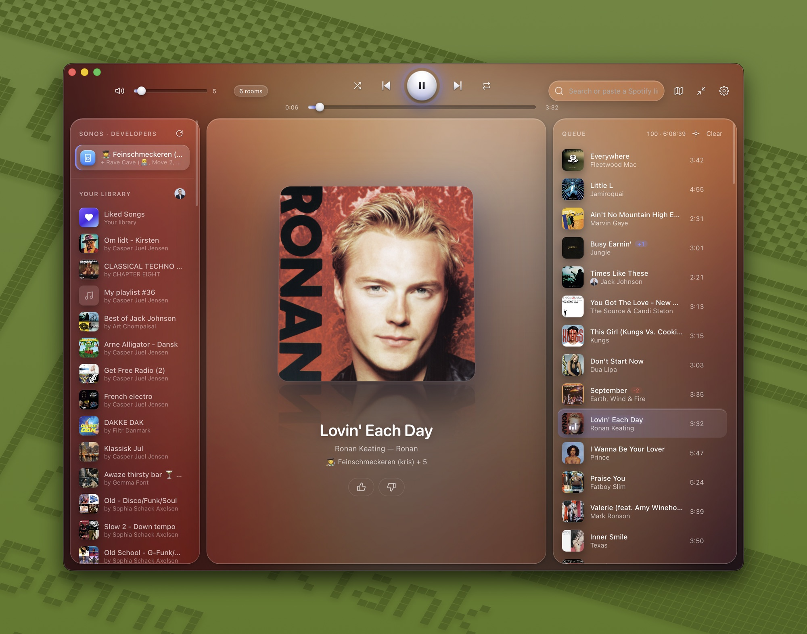

Sponos
A nicer way to play music on Sonos, with Spotify built in.
Download for Mac
- InstallOpen the download and drag Sponos to Applications.
- Allow the local networkClick Allow when macOS asks. That's how Sponos finds your speakers.
- Connect SpotifyOptional: see your playlists and liked songs. Search works without it.